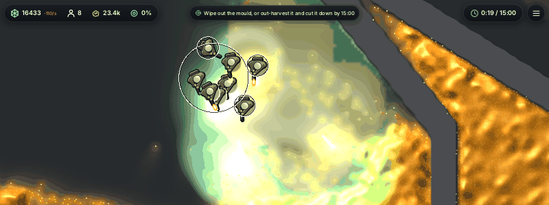
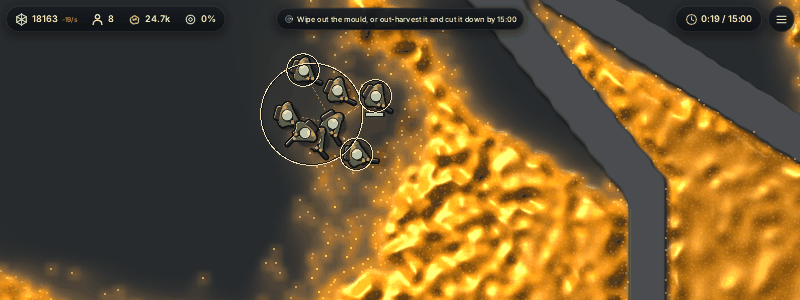
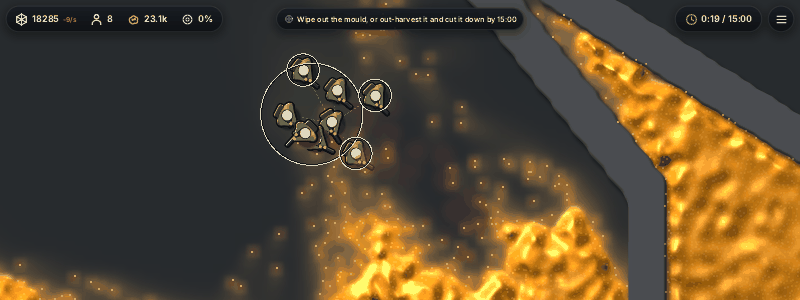
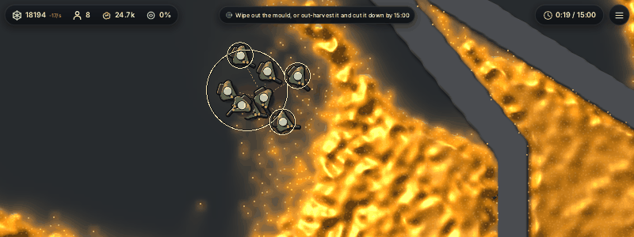

<title>Gun Budget Cards</title>
<meta name="claude:viewport-fit-sides" content="cover">
<link rel="stylesheet" href="https://fonts.googleapis.com/css2?family=Space+Grotesk:wght@500;700&family=Inter:wght@400;600&display=swap">
<style>
/* Layout: one column; a cost table, then each new card's film with its counts. */
:root { --bg:#f3f2ee; --fg:#1d2124; --muted:#5d6467; --panel:#ffffff; --line:#d9d6cc; --accent:#2f7f86;
  --display:"Space Grotesk",system-ui,sans-serif; --body:"Inter",system-ui,sans-serif; }
@media (prefers-color-scheme: dark) { :root:not([data-theme="light"]) { --bg:#121517; --fg:#e7e9e6; --muted:#9aa2a3; --panel:#1a1e21; --line:#2b3135; --accent:#6cc4cb; color-scheme:dark } }
:root[data-theme="dark"] { --bg:#121517; --fg:#e7e9e6; --muted:#9aa2a3; --panel:#1a1e21; --line:#2b3135; --accent:#6cc4cb; color-scheme:dark }
body { background:var(--bg); color:var(--fg); font-family:var(--body); line-height:1.55; }
main { max-width:860px; margin:0 auto; padding-block:32px 48px; padding-left:max(16px, env(safe-area-inset-left, 0px)); padding-right:max(16px, env(safe-area-inset-right, 0px)); display:grid; gap:28px; }
h1, h2 { font-family:var(--display); text-wrap:balance; margin:0; }
h1 { font-size:2rem; } h2 { font-size:1.25rem; }
p { margin:0; max-width:65ch; }
.muted { color:var(--muted); }
section { display:grid; gap:12px; }
figure { margin:0; background:var(--panel); border:1px solid var(--line); border-radius:6px; overflow:hidden; }
figure img { display:block; width:100%; }
figcaption { padding:12px 14px; display:flex; flex-wrap:wrap; gap:6px 14px; align-items:baseline; }
.tag { font-family:var(--display); font-weight:700; color:var(--accent); }
.counts { font-variant-numeric:tabular-nums; color:var(--muted); }
.wrap { overflow-x:auto; }
table { border-collapse:collapse; font-variant-numeric:tabular-nums; width:100%; }
th, td { text-align:left; padding:6px 10px; border-bottom:1px solid var(--line); vertical-align:top; }
th { font-weight:600; }
td.num { text-align:right; }
</style>
<main>
  <header style="display:grid;gap:8px">
    <h1>Gun Budget Cards</h1>
    <p class="muted">Larder World, 14 November. Every card now has a cost, and a gun takes cards only up to its budget of 10. There are three new cards, and Range now doubles your reach. Films are from the Fork map, seed 1, with eight soldiers holding the front from 0:19 to 0:22.</p>
  </header>

  <section>
    <h2>What each card costs</h2>
    <div class="wrap"><table>
      <thead><tr><th>Cost</th><th>Cards</th></tr></thead>
      <tbody>
        <tr><td class="num">4</td><td>bomb, germ</td></tr>
        <tr><td class="num">3</td><td>blast, gas, scorch, mist</td></tr>
        <tr><td class="num">2</td><td>wide, scatter, pierce, split, bait, range, rate, smother</td></tr>
        <tr><td class="num">1</td><td>quiet, delay, thick</td></tr>
        <tr><td class="num">0</td><td>thrift (and the next card costs 2 less)</td></tr>
      </tbody>
    </table></div>
    <p class="muted">The HUD shows "Cost N of 10" under the cards. Every test loadout on H fits; the most expensive, shock, costs exactly 10.</p>
  </section>

  <section>
    <h2>Rate: twice the fire a card</h2>
    <figure><figcaption><span class="tag">rate + rate + blast</span><span class="counts">2,569 killed · 400 shots · mould 22,889</span></figcaption></figure>
    <figure><figcaption><span class="tag">plain</span><span class="counts">655 killed · 156 shots · mould 24,657</span></figcaption></figure>
  </section>

  <section>
    <h2>Range: twice the reach a card</h2>
    <p>One card reaches 48 cells, two reach 72. A holding squad can then shoot into the thick body far behind the front.</p>
    <figure><figcaption><span class="tag">range + range + pierce</span><span class="counts">2,501 killed · 176 shots · mould 22,809</span></figcaption></figure>
  </section>

  <section>
    <h2>Smother: wipes the scent along a shot</h2>
    <p>Each bullet erases the food scent along its flight, so slime there loses its way to food until the scent spreads back. In this 3-second clip it barely shows, because the slime in front of the squad is already following the squad's own scent. It's meant for cutting the line between the slime and a crystal, and that clip is still to come.</p>
    <figure><figcaption><span class="tag">smother + smother</span><span class="counts">697 killed · 152 shots · mould 24,606</span></figcaption></figure>
  </section>

  <p class="muted">These counts are from one seed, so read them as a tuning note. Two Range cards come out as strong as two Rate cards plus blasts, for less budget. Rendered on the cloud's software GPU. More range costs more GPU time for each soldier's sight, which hasn't been timed on the 1070.</p>
</main>
